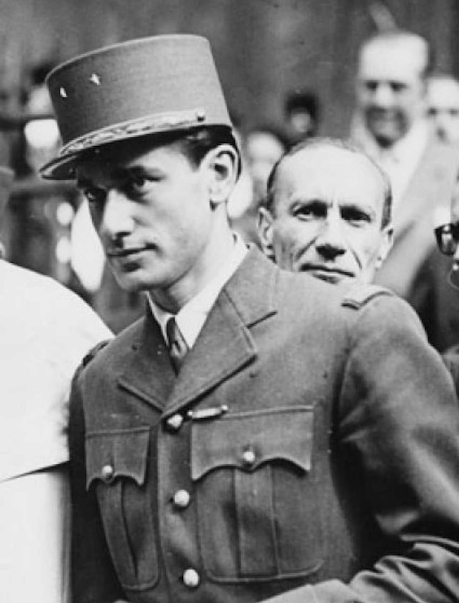

Nom : Jacques Chaban‑Delmas
Naissance : 7 mars 1915
Décès : 10 novembre 2000
Nationalité : Française
Rôle : Résistant, chef des Corps Francs, officier FFI
Jacques Chaban‑Delmas est l’une des figures les plus actives de la Résistance armée. Sous le nom de « Chaban », il organise des groupes de combat, des sabotages et des opérations clandestines dans le sud‑ouest de la France.
Chaban‑Delmas devient chef des Corps Francs, unités de Résistance armée chargées d’actions directes contre l’occupant : embuscades, destructions de voies ferrées, attaques ciblées. Son organisation militaire est l’une des plus efficaces du secteur.
En 1944, Chaban‑Delmas participe activement à la Libération de Bordeaux. Il coordonne les FFI, sécurise les points stratégiques et prépare l’arrivée des forces régulières. Son action permet une transition rapide et limite les combats dans la ville.
Après la guerre, Chaban‑Delmas devient une figure politique majeure : député, ministre, président de l’Assemblée nationale, puis Premier ministre. Son parcours reste marqué par son engagement résistant et son rôle militaire dans les FFI.